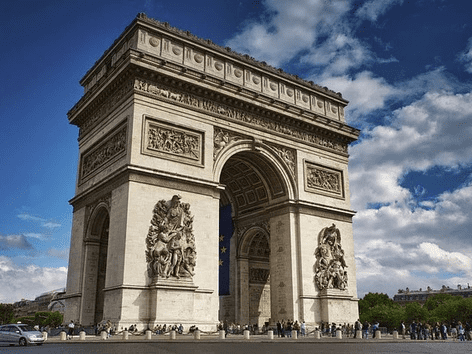
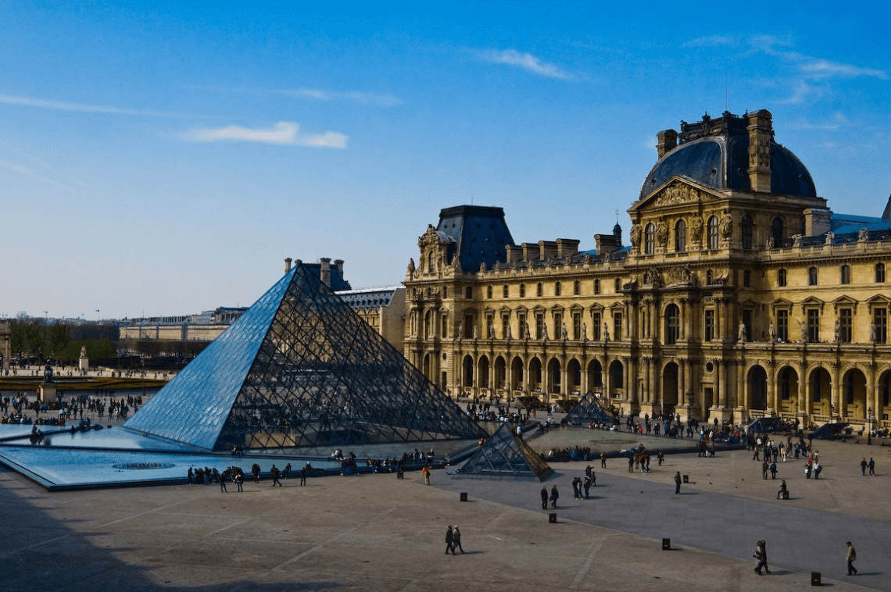

Франція — одна з найкрасивіших і цікавих країн Європи з багатющою історією і чудовою культурною спадщиною. Вона славиться мальовничою природою і затишними старовинними містечками, сучасними мегаполісами й фешенебельними курортами, музеями зі світовим ім’ям і вишуканою кухнею. Французька Республіка пропонує дивовижне розмаїття ландшафтів: від суворого океанічного узбережжя Нормандії до субтропіків Середземномор’я, від гірських вершин Альп до сільськогосподарських угідь Ельзасу, від лавандових полів Провансу до виноградників і пасовищ Бургундії. Це неймовірна, романтична і самобутня країна, яка є найпопулярнішим туристичним напрямом у світі. По території країни протікає кілька великих річок, які впадають в Атлантичний океан або Середземне море. Найбільша річка Франції — Луара, яка в минулому була важливою торговою артерією. Інші великі річки: Рона, Сена, Гаррона. Рона є найповноводнішою річкоюї. Вона впадає в Середземне море та утворює велику болотисту дельту, в якій розташований заповідник Камарг. Франція є найбільшою країною Західної Європи. Більша частина країни лежить на європейському континенті (до складу держави входить 20 заморських територій). Протяжність країни з півдня на північ складає майже 1000 км. Територія Франції омивається Атлантичним океаном, протокою Ла-Манш, Північним і Середземним морями. Французька Республіка надзвичайно різноманітна в плані рельєфу. Найнижча точка країни — дельта Рони. Найвища — гора Монблан (4810 м), найбільша вершина Альп. На півдні, вздовж кордону з Іспанією, простягнулися гори Піренеї. На південному сході розташовані Альпи й гори Юра, які відокремлюють Францію від Італії та Швейцарії. Між долинами Рони, Луари й Гаронни розташований Центральний Французький масив, який являє собою результат руйнування давніх гір. Гори Вогези відокремлюють річку Рейн від рівнин Ельзасу. Північ Центральної Франції зайнятий Паризьким басейном, на південному заході біля підніжжя Піренейських гір розташована Гаронська низовина, на південному сході — низовина Рони.
 